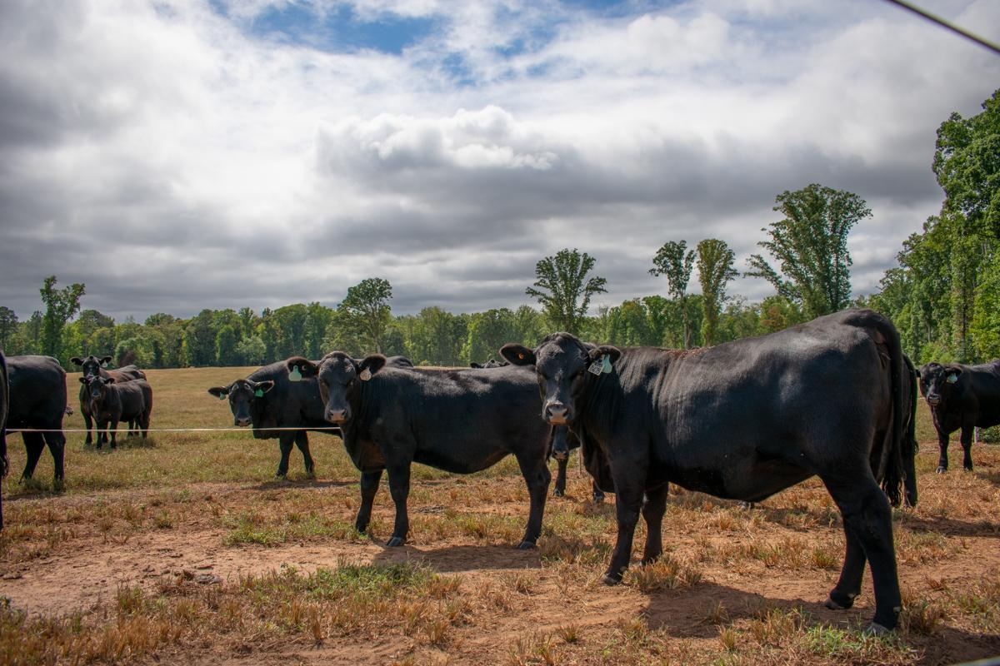
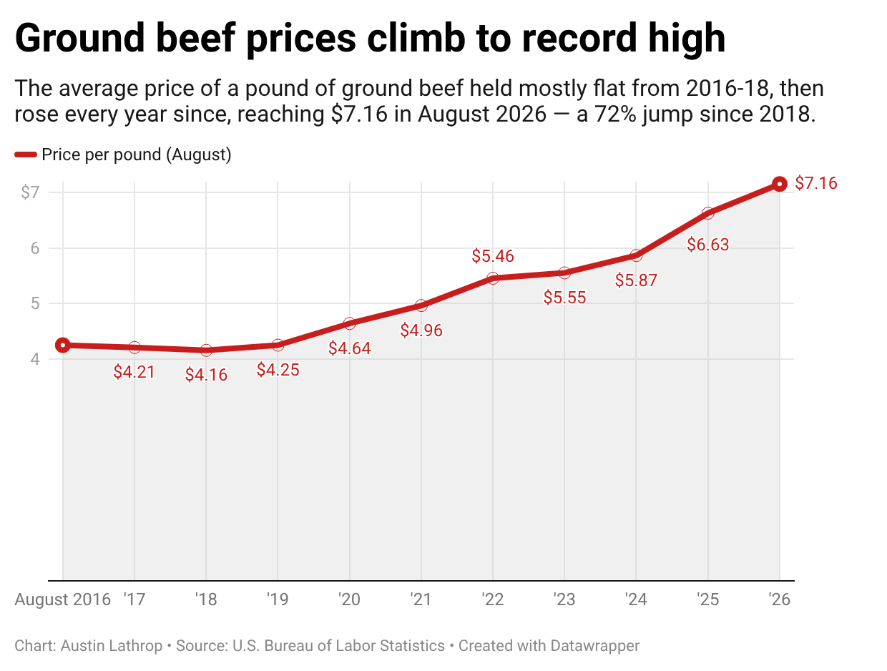

The Oglethorpe Echo,
Experts, ranchers say beef prices likely to remain high for years
With the U.S. cattle herd at its smallest since 1951, Georgia ranchers and a UGA livestock economist say relief at the grocery store could be three to five years away.

Beef prices have reached a record high, and the people who breed and study cattle in Georgia say recovery could take years.
“I think right now we’re not going to see a decrease in prices for three to four to five years,” said Andrew McPeake, owner of CAM Ranches in Crawford.
Consumers are seeing it, too. Ground beef averaged $7.16 a pound nationally in August, up 7.9% compared to last year, according to the Bureau of Labor Statistics.

Will Secor, a University of Georgia livestock economist, said the explanation starts with supply and demand.
The nation’s cattle herd had 86.2 million head as of Jan. 1 according to U.S. Department of Agriculture (USDA) data — its fewest cows since 1951 — while demand has remained strong despite increasing prices.
“So the only time when you’re going to see more beef consumed at higher prices, that’s got to be demand,” Secor said. “That’s a recipe for these really high prices, not just at the kind of retail meat cases, but also all along the supply chain.”
But producers can’t respond quickly.
“They can’t just flip a switch and get more cows,” Secor said.
A calf takes about 17 months of care and feeding to reach slaughter weight, McPeake said. That extended growth and feeding period means cattle population numbers typically move in cycles of 9-14 years. Secor said the nation is around year 12 of the current cycle.
While McPeake’s operation can’t do much about the cycle, it focuses on what it can control: the quality of the animal.
“All we can control is the genetics,” he said.
CAM Ranches sells breeding stock rather than beef, and has 20 cows, adult females that have given birth at least once, and 75 heifers, young females that have not given birth, in Crawford, as well as 150 cows in Florida.
McPeake said his donor cows rank in the top 1% of Angus for marbling. Those cows are flushed repeatedly, meaning fertilized embryos are collected from them and transferred to surrogate cows on neighboring farms.
“Industry average is eight embryos (per flush), so I mean, if you flush them six times, you ought to generate 48 embryos,” McPeake said. “Half of those are gonna get pregnant, so that cow makes 24.”
Drought is also delaying the herd rebuild.
As of Sept. 22, nearly 60% of the Lower 48 states were in drought, according to the U.S. Drought Monitor. Oglethorpe County has fared worse: all land is affected, with 64% of the county in severe drought.
Secor said at least 80% of Georgia’s cattle have been in abnormally dry conditions since about January.
“If you have a drought, you have less forage production, less grass for cattle to be out on and to eat, and that’s kind of the base for where all these cattle supply chains start,” Secor said.
He said he expects prices to remain elevated for up to two years, depending on how aggressively ranchers attempt to expand the herd. The signal to start rebuilding, McPeake said, comes when Texas, Oklahoma and other Plains states get rain. This will prompt ranchers to hold back their heifers, essentially choosing to breed the cow rather than sell them at auction for around $2,000.
Even then, McPeake estimates 2-3 years before prices recover. For consumers, he urged patience.
“Right now, just bear with us as much as anything, because while it's high for them, it’s high for us to produce it,” he said.